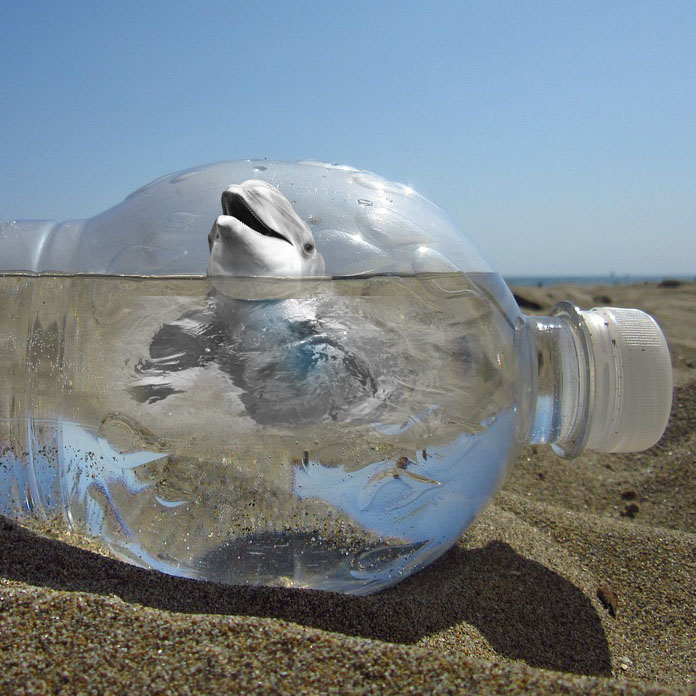

GoGreen!
We all create trash everyday. Most of us don't know where our trash goes. Sure, we've seen videos and pictures of climate change and pollution in the ocean. Did you know there are thing you can do to help?
GoGreen!
Recycle what you use
Reduce your waste by recycling what you use. Most this we buy end up in landfill. It can also end up in the ocean and harm marine wild-life.

Reducing your carbon footprint is another great way to reduce pollution. Most people don't know how much carbon foot-print they leave behind.
Click here to find out about your carbon foot-print